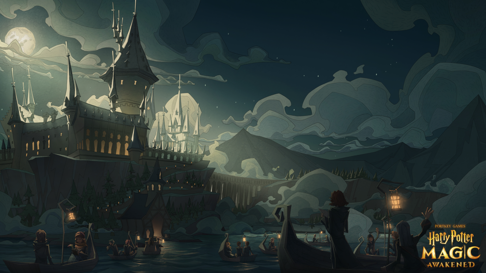

Back
Mijn naam is Vandorpe Jentl en het verheugt me dat je hier bent. Ik verwelkom je op mijn pagina, laat me iets meer over mezelf delen:
- Woonplaats: Lode Zielenslaan 19, 8930 Menen
- Telefoon: +32 471 56 72 79
- Email: jentlvandorpe@hotmail.com
Foto:
Ook heb ik zoals elke andere persoon wat hobbies. Hier hebt u wat voorbeelden:
Toestelturnen:
- Toestelturnen is een sport waarbij oefeningen worden gedaan die kracht, lenigheid, evenwicht en coördinatie nodig hebben. Alles kan, rennen, springen en salto's. Bij de jongens heb je 6 onderdelen: tumbling, gelijke brug, rekstok, pegasus, ringen en voltige (sprong).
- Officiele Gymfed site voor turnen.
Muziek:
- Muziek is een breed woord, maar ik heb in mijn leven al 4 verschillende instrummenten bespeeld: de trommel, de trompet, de gitaar en de piano. Hoewel ik de meeste van deze al ben gestopt, is er een die nog doorgaat, de piano. Piano is een snaarinstrumment dat bespeelt word met 'keys'. Een piano heeft in totaal zo'n 88 keys! Via deze keys valt een hamer op een snaar en zal deze snaar een toon genereren. Door deze in verschillende volgordes te spelen krijg je een melodie, met als gevolg een liedjes.
- Wikipedia van een piano.
Fitness:
- Buiten mijn schooluren doe ik ook nog aan fitness, kracht fitness om precies te zijn. Krachttraining het uitvoeren van oefeningen om je spieren te ontwikkelen en sterker te maken. Dit doe je met korte explosieve bewegingen en vaak met behulp van gewichten zoals dumbbells, een barbell of een machine.
- 13 beginnertips over krachttraining.
- Nu wat meer van wat ik leuk vind, ik hou vooral van muziek en films dus hier heb je mijn favorieten:
- Als er 1 ding is dat ik ben is het wel een potterhead, de magische wereld van Hogwarts en Hogsmeade hebben mijn hartje helemaal veroverd.
- Pop, pop is nu mijn genre. Wat voor pop maakt niet uit, maar ik hou er gewoon van. Artiesten zoals Lost Frequencies, James Arthur, Hozier, en noem maar op.

Vrienden
| Voornaam |
Achternaam |
Postcode |
Stad |
Land |
E-mail |
| Amelie |
Dupont |
4000 |
Lüttich |
België |
amelie.d@example.com |
| Emma |
Maes |
1000 |
Onbekend |
België |
emma.maes@example.com |
| Liam |
Janssens |
Onbekend |
Antwerpen |
België |
liam.j@example.com |
| Olivia |
Dubois |
9000 |
Gent |
Onbekend |
olivia.d@example.com |
| Noah |
Lambert |
1210 |
Brussel |
België |
noah.l@example.com |
Er is maar 1 rood omdat de andere in een alt klasse veel specifieker zijn en dus voorrang hebben op de onbekende klasse.